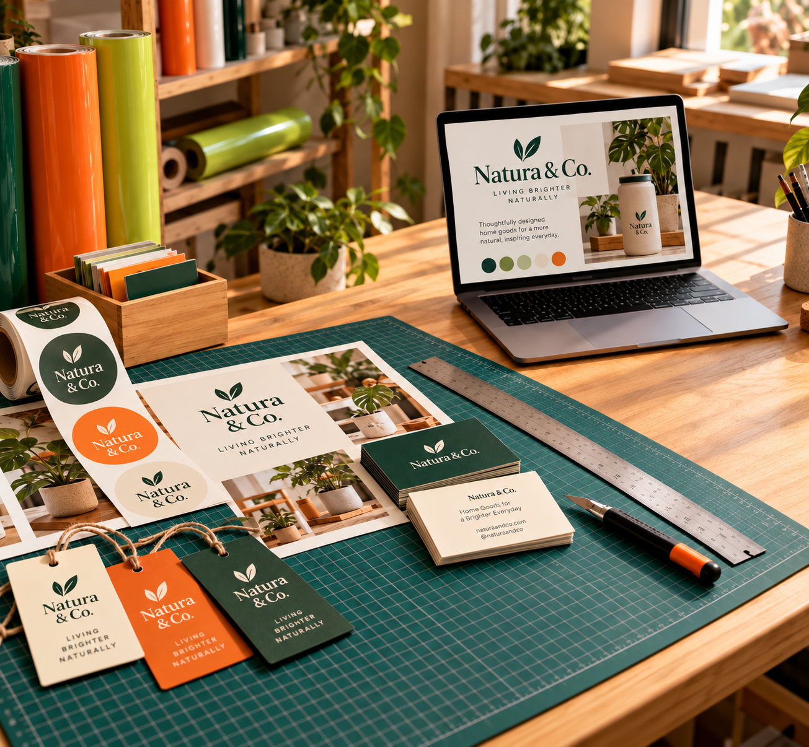

Preguntas frecuentes
VAMOS A
RESOLVERLO.
Antes de empezar, aquí tienes algunas respuestas.
Para lo demás, estamos a un mensaje de distancia.

¿Puedo llevar mi propio diseño?
Sí. Puedes compartirlo en AI, PDF, SVG o EPS, preferentemente editable. También revisamos imágenes en alta resolución y podemos ayudarte con el diseño desde cero.
¿Qué necesitan para cotizar mi proyecto?
El servicio que te interesa, las medidas aproximadas, la cantidad y la fecha que tienes en mente. Si tienes un diseño o una referencia, puedes adjuntarlo en la conversación de WhatsApp.
¿Mi vehículo o superficie se puede rotular?
Revisamos el material, la pintura y el estado de la superficie para recomendar la opción adecuada y evaluar la adherencia del vinil.
¿Cuánto dura una rotulación en vinil?
Depende del material, la exposición y el cuidado. Como referencia, puede durar de 3 a 7 años; confirmamos la recomendación al revisar las condiciones de tu proyecto.
¿Pueden trabajar con mi presupuesto?
Sí. Comparte tu presupuesto y lo que quieres lograr. Buscamos alternativas de formato, materiales y acabados que se adapten a tu proyecto.
¿Qué pasa si todavía no tengo logotipo o diseño?
Cuéntanos qué quieres comunicar y comparte algunas referencias. Podemos ayudarte a plantear el diseño; el alcance de ese trabajo se revisa con tu proyecto.
¿Cómo se calcula el precio?
La cotización depende del formato, las medidas, la cantidad y las necesidades de diseño y acabado. Envía estos datos para recibir una propuesta para tu caso.
¿Hay una cantidad mínima o un plazo fijo?
Consulta la cantidad que necesitas y la fecha que tienes en mente. La disponibilidad, el material y los tiempos se confirman al cotizar cada proyecto.
¿Puedo enviar fotografías como referencia?
Sí. Son útiles para entender el estilo que buscas o la superficie que quieres personalizar. Una referencia orienta la idea; revisamos por separado si el archivo tiene calidad para impresión.
¿Qué debo revisar antes de producir?
Comprueba nombres, números, ortografía y la cantidad de piezas. Confirma también las medidas y la ubicación del diseño para evitar cambios de último momento.